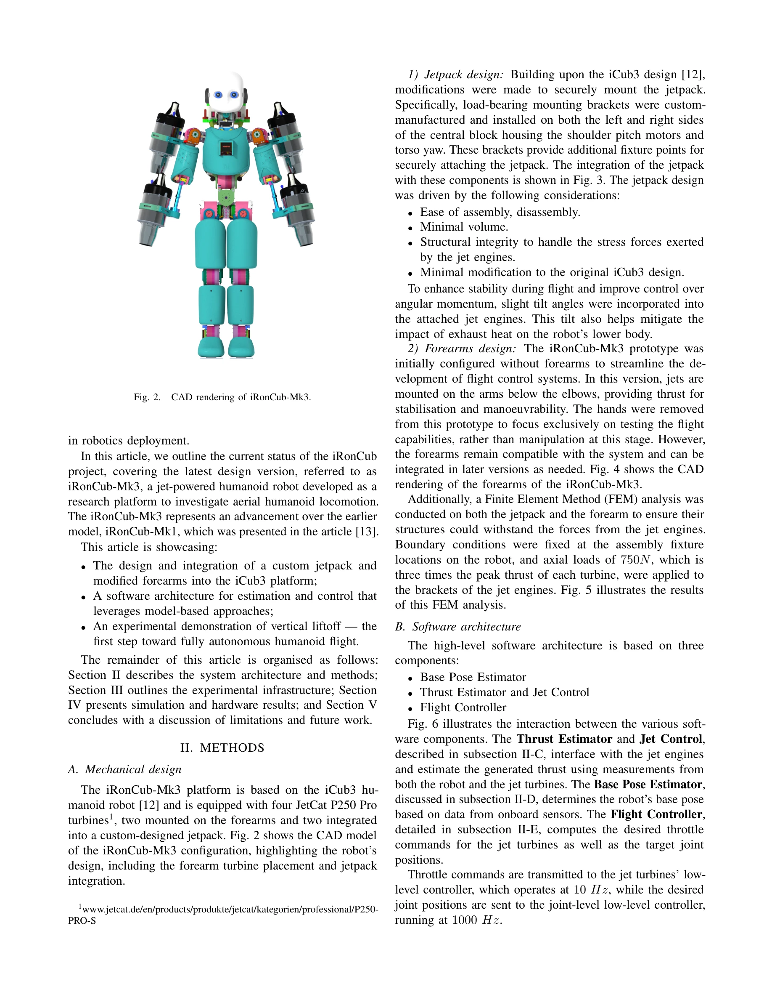
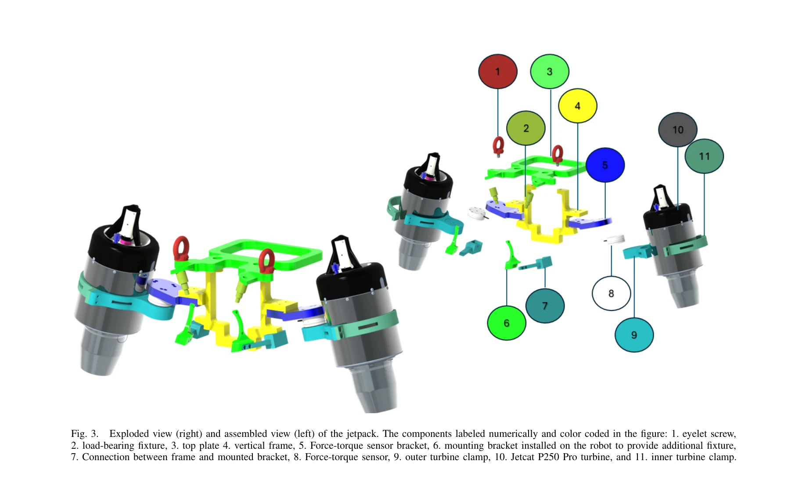

저자: Davide Gorbani, Hosameldin Awadalla Omer Mohamed, Giuseppe L'Erario, Gabriele Nava, Punith Reddy Vanteddu, Shabarish Purushothaman Pillai, Antonello Paolino, Fabio Bergonti, Saverio Taliani, Alessandro Croci, Nicholas James Tremaroli, Silvio Traversaro, Bruno Vittorio Trombetta, Daniele Pucci | 날짜: 2025-06-01 | URL: https://arxiv.org/abs/2506.01125

Fig. 2.
iRonCub 3는 제트 터빈 4개를 장착한 완전 인형형 비행 로봇으로, 시뮬레이션 검증 후 최초로 수직 이착륙에 성공했다.

Fig. 3.
총평: iRonCub 3는 인형형 로봇 비행의 기술적 난제(제어, 추정, 기계 통합)를 체계적으로 해결하고 최초 비행 실증을 달성했으나, 고등 기동과 조작 능력 통합은 향후 과제다.